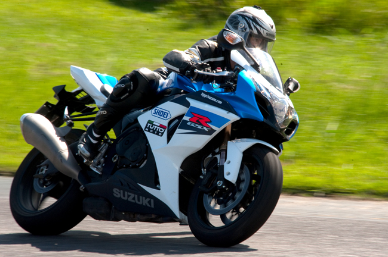

- Passa dos 300km/h fácil, fácil
- Dá pau na Yamaha R1!
- Você não vai precisar respeitar o fluxo de carros, você vai poder acelerar!
- Melhor deixar o vídeo falar por si, assiste lá ;)
- Seu nome verdadeiro é GSX-R porém é conhecida e apelidade como SRAD
- Possui motor de 4 cilindros em linha e pelo menos 120cv para cima
- Autonomia entre 15 a 18 litros de combustivel no tanque
- Revolucionou as ruas por ser uma categoria que entrega uma cilindrada menor com muita esportividade